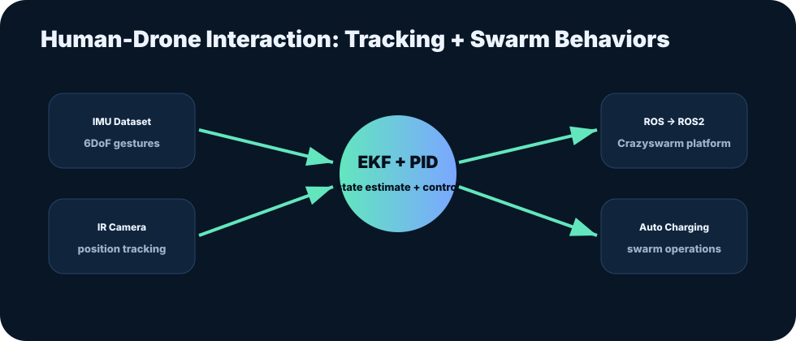

Human-Drone Interaction: Drone Swarm Sensor Fusion
6DoF IMU datasets, EKF sensor fusion, PID tuning, ROS2 migration, and Crazyflie/Crazyswarm indoor logistics work.
Executive summary
The research work supported human-drone interaction and drone swarm operation by improving localization, data generation, and platform migration.
Contributions included 6DoF IMU dataset creation for gesture-control model training and tuning localization behavior using EKF and PID concepts.
The work supported indoor logistics scenarios and automated battery charging behaviors during swarm operations.

Full document
Use this slot for the full thesis or project report PDF.
Read project report PDFChecking whether the full PDF has been uploaded...
Problem framing
Swarm robotics requires stable localization, robust state estimation, and repeatable control behavior. In indoor environments, small drones must combine inertial data with external tracking inputs while maintaining stability for imaging and cooperative behaviors.
Engineering approach
- Contributed to a 6DoF IMU dataset for drone swarm gesture-control training.
- Improved location tracking through PID tuning and EKF-based sensor fusion.
- Integrated IR camera and IMU data for more reliable state estimation.
- Supported migration of a ROS-based swarm show platform to ROS2 with Crazyswarm.
- Fine-tuned Crazyflie control behavior for stable pallet detection imaging.
Outcomes and value
- Improved the engineering foundation for human-drone interaction experiments.
- Contributed to automated charging and indoor logistics research capability.
- Strengthened hands-on experience across controls, perception, robotics middleware, and embedded flight platforms.
Details for recruiters and collaborators
Interview angle
- Shows ability to work with both software architecture and physical robotics behavior.
- Useful for roles involving autonomy, test, robotics validation, or drone system integration.
Possible public demo
- Add a short GIF/video of a Crazyflie tracking or pallet detection demo.
- Add a plot showing EKF estimate versus raw sensor measurements when available.
How this fits the Kumar Harsh brand
This case study strengthens the central brand message: engineering reliable autonomous systems requires controls knowledge, test discipline, data interpretation, and documentation that can survive technical review.